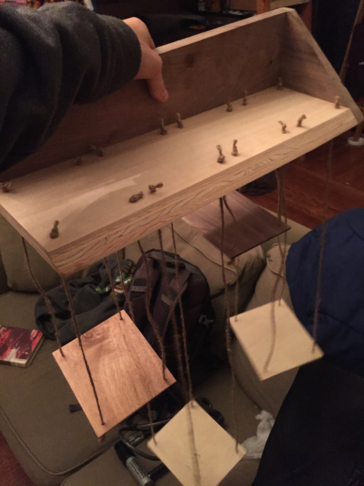
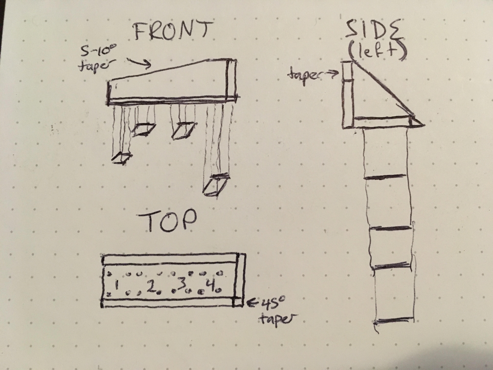

Planterbox Hanging Platforms
June, 2017
I gave this one away recently, and wish I could dig up more pictures of it. It was one of the earliest projects I tried. I got the idea from a friend's living room. They had a rectangular frame mounted on the wall, and a series of platforms mounted within the frame descending from the top left corner to the bottom right. It was a wall that got a lot of natural sunlight, and each of the platforms had a succulent plant sitting on it. I was taken.

At the time, I had a small collection of cacti (very small, 2-5 inches tops). My friend's frame apparatus seemed a bit unwieldy for most rooms that weren't willing to dedicate an entire wall to their plants. So I decided to make a more portable one that could be easily put up and taken down.
The project itself was fairly simple. I started with a piece of hefty 3/4 inch scrap wood that served as the base. Its forward-facing side was cut at 45 degrees so that the layering of the plywood showed through. I then attached another piece of similar thickness to its back at a 90 degree angle using clamps and wood glue. The back piece had a slight taper from left to right, 5-10 degrees, for aesthetics.
Also for looks, and to give the base some support, I added a triangle to the right side of the adjoined base and backing. The edges of this were cut to meet the 45 degree angle of the front. This then got lots of sanding until the edges were flush and smooth.
Finally, I attached the platforms - actually the trickiest part. I first drilled four sets of holes in a square position, one for each of the platforms. Those were meant to hold the strings that would support the platforms. I then found some thin scrap wood lying around the garage, and cut four identically sized squares to serve as the platforms. Very carefully (because the wood was relatively fragile), I drilled four holes near the edges of each platform. For looks, and so the planters didn't run into each other, each platform was hung at a different height.
The penultimate step was to cut four sets of four lengths of string, with each group of four being the same length. Those I then knotted at one end, and fed through the four sets of holes through the base. Finally, I fed the unknotted ends through the hanging platforms, and tied them off at the bottom.
By far the toughest part of this project was getting the platforms to be level. The knots supporting the platforms tended to slip, and the alignment of the platforms would shift as they settled. Getting them level took a lot of tying, untying, and retying. But, once finished, the piece allows you to proudly display four little plants in a place of your choice! Wow!